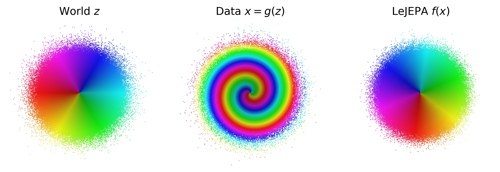
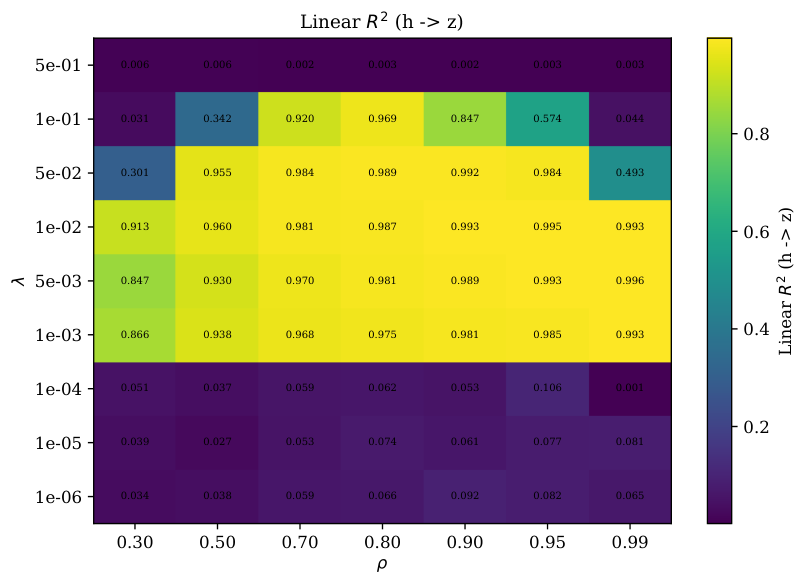
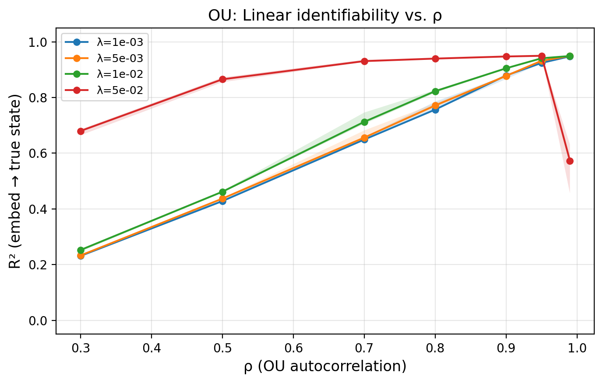

All five theoretical results (identifiability, Gaussian uniqueness, approximate bound, planning) are verified in Lean 4 with Mathlib, with background lemmas axiomatized.
Abstract
A representation that scrambles the true degrees of freedom of the world cannot support reliable planning or compositional generalization. We prove that LeJEPA (alignment plus Gaussian regularization) linearly recovers the world's latent variables from nonlinear observations, a property known as linear identifiability, in a broad class of worlds where latents evolve under stationary, additive-noise transitions. Our main result is that among all such worlds, the Gaussian is the unique latent distribution for which this guarantee holds. The forward direction rests on a spectral decomposition in which each degree of nonlinearity is strictly penalized by alignment, making the linear map the optimum; the converse rules out every non-Gaussian alternative. We further prove an approximate identifiability result where the guarantee degrades gracefully, and show that linear, orthogonal identifiability enables optimal latent-space planning. We validate the theory with experiments ranging from 2D examples to 1024-dimensional latents, including distributional ablations and pixel-based robotic control. Our theory turns an empirically successful recipe into a mathematical guarantee, providing the foundation for building World Models that provably recover the structure of the world.
Problem
No identifiability guarantees exist for Joint-Embedding Predictive Architectures (JEPAs). The open question is when LeJEPA, which combines alignment with Gaussian regularization (SIGReg), linearly recovers the world's latent variables from nonlinear observations.
Approach
The authors model worlds whose latents are independent and evolve under stationary, additive-noise transitions. They analyze the induced transition operator spectrally, using Hermite expansions. They prove linear (orthogonal) identifiability for Gaussian worlds, uniqueness of the Gaussian within this class, an approximate identifiability bound, and optimality of latent-space planning. All proofs are verified in Lean 4 with Mathlib, with standard results such as Hermite polynomial properties and Mazur–Ulam axiomatized.

Figure 1: LeJEPA learns the World Model. (left) The world has independent Gaussian latent variables . (center) An unknown nonlinear process scrambles them into the data we observe. (right) LeJEPA [ 2 ] recovers the latent variables up to rotation. We prove this is the unique optimum.
Results
LeJEPA's optimum is h(z)=Qz with Q orthogonal if and only if the latents are Gaussian. Experiments from 2D mixings up to 1024-dimensional latents, plus pixel-based DMC Reacher, confirm recovery with R^2>0.999 for SIGReg and VICReg, while InfoNCE degrades at scale. The Lean project compiles against Mathlib v4.28.0 with zero sorry obligations.

Figure 6: Grid search over the regularization weight \lambda and OU correlation \rho (5 seeds each, mean \pm std). Left: Linear R^{2} between true and learned latents ( \uparrow better). Right: Normalized orthogonality error of the fitted linear map ( \downarrow better). Identifiability requires both objectives to be active: too much Gaussianity ( \lambda=0.5 ) collapses the representation entirel

Figure 14: Left: OU identifiability vs. \rho for different \lambda values. R^{2} increases monotonically, with all \lambda values converging at high \rho . Higher \lambda (stronger SIGReg) helps at low \rho where the alignment signal is weak. Right: Gaussian (OU) vs. trajectory data at matched autocorrelation \rho . At the same \rho , Gaussian latents achieve substantially higher R^{2} , directly
N
R^2(x→z)
SIGReg
VICReg
InfoNCE
2
0.781
0.999998
0.999996
0.950961
16
0.734
0.999988
0.999987
0.999880
64
0.737
0.999966
0.999968
0.648496
128
0.739
0.999938
0.999942
0.566955
Linear identifiability R^2(h→z) across regularizers vs. latent dimension N (RealNVP mixing; excerpt)